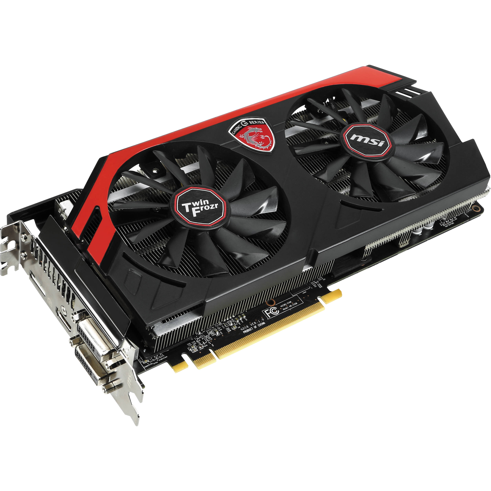
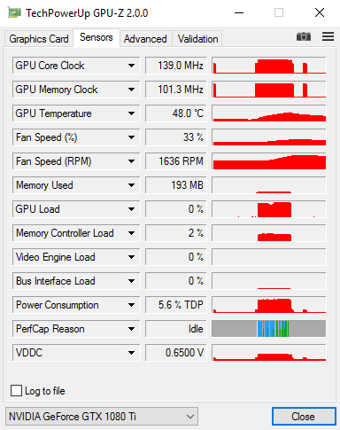
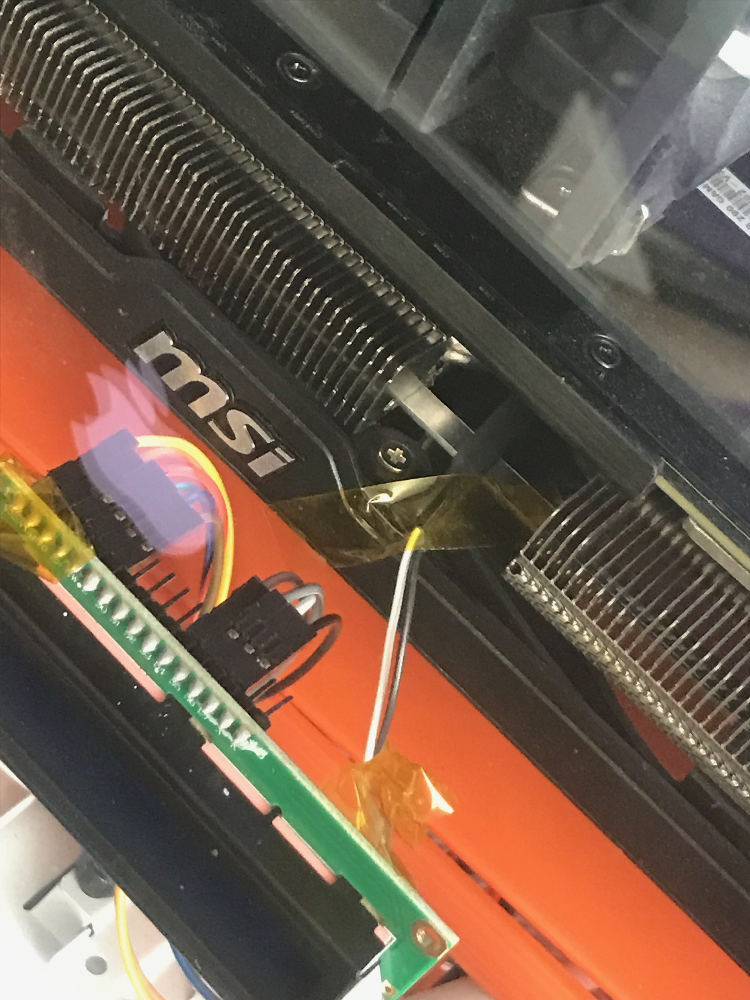
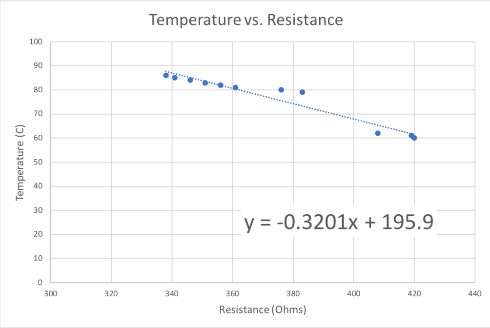
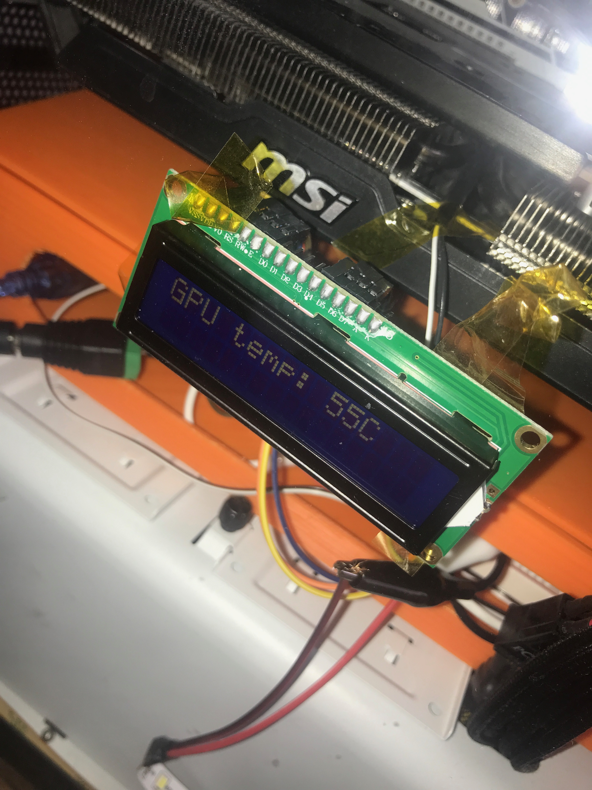
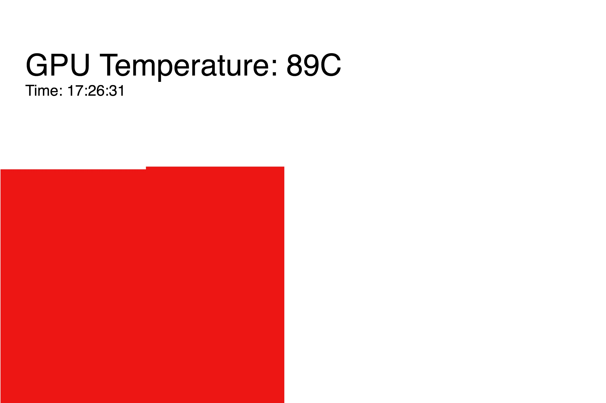

For my final project, I designed a system for measuring the temperature of a GPU and warning the user if the GPU gets too hot.
My PC has a R9 290 graphics card that is notorious for running quite hot. It's safer for GPU's to stay under 85C and most begin overheating at 95C. There have been many times where I have been gaming and putting my graphics card under a heavy load and did not realize that its temperature was exceeding 88C. To check the temperature, I usually use programs like GPU-Z or MSI Afterburner, but these do not alert me when the temperature gets too high. Therefore, I realized that I needed a visual warning system for when my GPU gets too hot.
 To design my warning system, I knew I would need a thermistor as my input for measuring temperature and an LED strip as my output. I later added two more outputs: a LCD display mounted on my computer's case and a webpage using p5.js. I aimed to design a system with a visual warning when the temperature exceeds 88C. When the GPU gets too hot, the LED strip starts blinking and then blinks faster when the temperature reaches 91C.
I began my project by creating a simple circuit consisting of only an arduino, thermistor, and resistor. Before connecting the thermistor to my GPU, I had to ensure that it functioned properly by checking resistance values in the Serial Monitor. I used a temperature equation online to check if the readings were somewhat accurate. I then made a seperate simple circuit with the LED strip to make sure I could make it blink with code. I then integrated the two circuits so the LED strip would blink if I pinched the thermistor with my fingers.
I visited the Comotion Makerspace to solder my thermistor to longer wires and apply heat shrink. This was a necessary step since I didn't want exposed wires to come into contact with my GPU and cause it to short circuit. The next step, measuring the temperature of my GPU, was much more challenging than I thought it would be. I used kapton tape to fasten my thermistor to the most accessible part of the GPU, the heat sink. When I opened my Serial Monitor along with GPU-Z, I was confused as to why my thermistor's values were so much lower than the expected ones. Heat sinks transfer heat and while they can become quite hot, they don't represent the GPU's actural temperature.
I realized that I would need a custom equation to translate the heatsink's temperature to that of the GPU. I used excel and made a column of temperatures from 60 to 95 and then launched a benchmarking program on my PC which would cause my GPU to work at heavy load and thus rise in temperature quickly. With my Serial Monitor showing resistance and my PC showing the current temperature, I rapidly filled in the other column with temperatures at various resistances. I then put these values into a graph Temperature vs. Resistance. The slope of the line gave me an equation for temperature in relation to resistance. I replaced the old temperature equation with this one and my outputted values were now much closer to the accurate ones from GPU-Z.
I also realized that it would be helpful to see the current temperature of the GPU, so I included an LCD display showing the current temperature. I followed a picture online of the wiring since the number of pins and wires made it quite complicated to assemble. I discovered that the function of the potentiometer was to adjust the brightness/contrast of the display. This component was taped to the glass on the interior of my case.
The temperature is also displayed on a webpage using p5.js. A graph shows the change in temperature over time, and when the temperature exceeds 88C, an image of the canvas is saved. This is helpful for knowing the exact time that a GPU begins to overheat.
